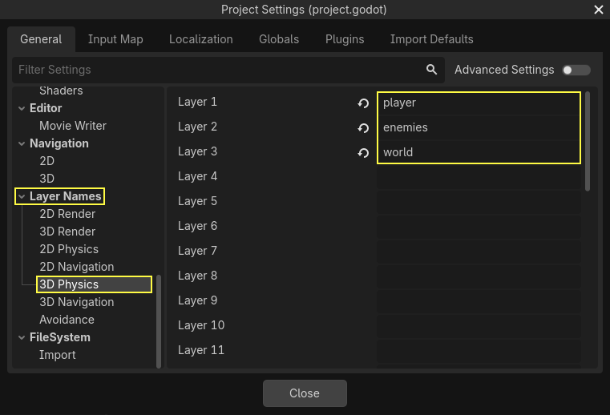
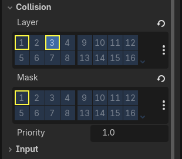
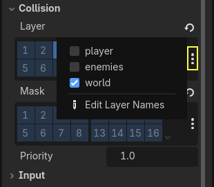
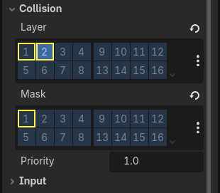
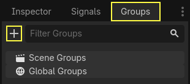
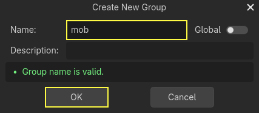

Jumping and squashing monsters
In this part, we'll add the ability to jump and squash the monsters. In the next lesson, we'll make the player die when a monster hits them on the ground.
First, we have to change a few settings related to physics interactions. Enter the world of physics layers.
Controlling physics interactions
Physics bodies have access to two complementary properties: layers and masks. Layers define on which physics layer(s) an object is.
Masks control the layers that a body will listen to and detect. This affects collision detection. When you want two bodies to interact, you need at least one to have a mask corresponding to the other.
If that's confusing, don't worry, we'll see three examples in a second.
The important point is that you can use layers and masks to filter physics interactions, control performance, and remove the need for extra conditions in your code.
By default, all physics bodies and areas are set to both layer and mask 1.
This means they all collide with each other.
Physics layers are represented by numbers, but we can give them names to keep track of what's what.
Setting layer names
Let's give our physics layers a name. Go to Project -> Project Settings.

In the left menu, navigate down to Layer Names -> 3D Physics. You can see a list of layers with a field next to each of them on the right. You can set their names there. Name the first three layers player, enemies, and world, respectively.

Now, we can assign them to our physics nodes.
Assigning layers and masks
In the Main scene, select the Ground node. In the Inspector, expand the
Collision section. There, you can see the node's layers and masks as a grid of
buttons.

The ground is part of the world, so we want it to be part of the third layer. Click the lit button to toggle off the first Layer and toggle on the third one. Then, toggle off the Mask by clicking on it.

As mentioned before, the Mask property allows a node to listen to interaction
with other physics objects, but we don't need it to have collisions. Ground doesn't need to listen to anything; it's just there to prevent
creatures from falling.
Note that you can click the "..." button on the right side of the properties to see a list of named checkboxes.

Next up are the Player and the Mob. Open player.tscn by double-clicking
the file in the FileSystem dock.
Select the Player node and set its Collision -> Mask to both "enemies" and "world". You can leave the default Layer property as it is, because the first layer is the "player" layer.

Then, open the Mob scene by double-clicking on mob.tscn and select the
Mob node.
Set its Collision -> Layer to "enemies" and unset its Collision -> Mask, leaving the mask empty.

These settings mean the monsters will move through one another. If you want the monsters to collide with and slide against each other, turn on the "enemies" mask.
Note
The mobs don't need to mask the "world" layer because they only move on the XZ plane. We don't apply any gravity to them by design.
Jumping
The jumping mechanic itself requires only two lines of code. Open the Player
script. We need a value to control the jump's strength and update
_physics_process() to code the jump.
After the line that defines fall_acceleration, at the top of the script, add
the jump_impulse.
#...
# Vertical impulse applied to the character upon jumping in meters per second.
@export var jump_impulse = 20
// Don't forget to rebuild the project so the editor knows about the new export variable.
// ...
// Vertical impulse applied to the character upon jumping in meters per second.
[Export]
public int JumpImpulse { get; set; } = 20;
Inside _physics_process(), add the following code before the move_and_slide() codeblock.
func _physics_process(delta):
#...
# Jumping.
if is_on_floor() and Input.is_action_just_pressed("jump"):
target_velocity.y = jump_impulse
#...
public override void _PhysicsProcess(double delta)
{
// ...
// Jumping.
if (IsOnFloor() && Input.IsActionJustPressed("jump"))
{
_targetVelocity.Y = JumpImpulse;
}
// ...
}
That's all you need to jump!
The is_on_floor() method is a tool from the CharacterBody3D class. It
returns true if the body collided with the floor in this frame. That's why
we apply gravity to the Player: so we collide with the floor instead of
floating over it like the monsters.
If the character is on the floor and the player presses "jump", we instantly give them a lot of vertical speed. In games, you really want controls to be responsive and giving instant speed boosts like these, while unrealistic, feels great.
Notice that the Y axis is positive upwards. That's unlike 2D, where the Y axis is positive downwards.
Squashing monsters
Let's add the squash mechanic next. We're going to make the character bounce over monsters and kill them at the same time.
We need to detect collisions with a monster and to differentiate them from collisions with the floor. To do so, we can use Godot's group tagging feature.
Open the scene mob.tscn again and select the Mob node. Go to the Groups
dock on the right to see a list of groups, which allows you to assign
tags to nodes. Click on the + button to open the Create new Group dialog.

Enter "mob" in the Name field and click the Ok button.

The "mob" group is now shown under the Scene Groups section.

An icon appears in the Scene dock to indicate the node is part of at least one group.

We can now use the group from the code to distinguish collisions with monsters from collisions with the floor.
Coding the squash mechanic
Head back to the Player script to code the squash and bounce.
At the top of the script, we need another property, bounce_impulse. When
squashing an enemy, we don't necessarily want the character to go as high up as
when jumping.
# Vertical impulse applied to the character upon bouncing over a mob in
# meters per second.
@export var bounce_impulse = 16
// Don't forget to rebuild the project so the editor knows about the new export variable.
// Vertical impulse applied to the character upon bouncing over a mob in meters per second.
[Export]
public int BounceImpulse { get; set; } = 16;
Then, after the Jumping codeblock we added above in _physics_process(), add the following loop. With
move_and_slide(), Godot makes the body move sometimes multiple times in a
row to smooth out the character's motion. So we have to loop over all collisions
that may have happened.
In every iteration of the loop, we check if we landed on a mob. If so, we kill it and bounce.
With this code, if no collisions occurred on a given frame, the loop won't run.
func _physics_process(delta):
#...
# Iterate through all collisions that occurred this frame
for index in range(get_slide_collision_count()):
# We get one of the collisions with the player
var collision = get_slide_collision(index)
# If there are duplicate collisions with a mob in a single frame
# the mob will be deleted after the first collision, and a second call to
# get_collider will return null, leading to a null pointer when calling
# collision.get_collider().is_in_group("mob").
# This block of code prevents processing duplicate collisions.
if collision.get_collider() == null:
continue
# If the collider is with a mob
if collision.get_collider().is_in_group("mob"):
var mob = collision.get_collider()
# we check that we are hitting it from above.
if Vector3.UP.dot(collision.get_normal()) > 0.1:
# If so, we squash it and bounce.
mob.squash()
target_velocity.y = bounce_impulse
# Prevent further duplicate calls.
break
public override void _PhysicsProcess(double delta)
{
// ...
// Iterate through all collisions that occurred this frame.
for (int index = 0; index < GetSlideCollisionCount(); index++)
{
// We get one of the collisions with the player.
KinematicCollision3D collision = GetSlideCollision(index);
// If the collision is with a mob.
// With C# we leverage typing and pattern-matching
// instead of checking for the group we created.
if (collision.GetCollider() is Mob mob)
{
// We check that we are hitting it from above.
if (Vector3.Up.Dot(collision.GetNormal()) > 0.1f)
{
// If so, we squash it and bounce.
mob.Squash();
_targetVelocity.Y = BounceImpulse;
// Prevent further duplicate calls.
break;
}
}
}
}
That's a lot of new functions. Here's some more information about them.
The functions get_slide_collision_count() and get_slide_collision() both come from
the CharacterBody3D class and are related to
move_and_slide().
get_slide_collision() returns a
KinematicCollision3D object that holds
information about where and how the collision occurred. For example, we use its
get_collider property to check if we collided with a "mob" by calling
is_in_group() on it: collision.get_collider().is_in_group("mob").
Note
The method is_in_group() is available on every Node.
To check that we are landing on the monster, we use the vector dot product:
Vector3.UP.dot(collision.get_normal()) > 0.1. The collision normal is a 3D vector
that is perpendicular to the plane where the collision occurred. The dot product
allows us to compare it to the up direction.
With dot products, when the result is greater than 0, the two vectors are at
an angle of fewer than 90 degrees. A value higher than 0.1 tells us that we
are roughly above the monster.
After handling the squash and bounce logic, we terminate the loop early via the break statement
to prevent further duplicate calls to mob.squash(), which may otherwise result in unintended bugs
such as counting the score multiple times for one kill.
We are calling one undefined function, mob.squash(), so we have to add it to
the Mob class.
Open the script mob.gd by double-clicking on it in the FileSystem dock. At
the top of the script, we want to define a new signal named squashed. And at
the bottom, you can add the squash function, where we emit the signal and
destroy the mob.
# Emitted when the player jumped on the mob.
signal squashed
# ...
func squash():
squashed.emit()
queue_free()
// Don't forget to rebuild the project so the editor knows about the new signal.
// Emitted when the player jumped on the mob.
[Signal]
public delegate void SquashedEventHandler();
// ...
public void Squash()
{
EmitSignal(SignalName.Squashed);
QueueFree();
}
Note
When using C#, Godot will create the appropriate events automatically for all Signals ending with EventHandler, see C# Signals.
We will use the signal to add points to the score in the next lesson.
With that, you should be able to kill monsters by jumping on them. You can press
F5 to try the game and set main.tscn as your project's main scene.
However, the player won't die yet. We'll work on that in the next part.